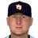

American Baseball League · Depth chart & lineups
New York Knights
← Team page · Payroll · Transactions
Based on games played and started through May 13, 2002. The OOTP export has no saved depth chart or lineup card, so this is derived from real usage. Lineups and depth chart list only players on the active roster now (26 players).
Most common lineups
For each batting-order spot, the active player who started there most often against that kind of starter (each player used once). Starts in spot = games he started in that spot out of the games against that hand. AVG/OBP/SLG: his season line with this club.
vs. right-handed starters 33 games
| # | Player | Pos | Starts in spot | AVG | OBP | SLG |
|---|---|---|---|---|---|---|
| 1 | Chris Singleton | RF | 31 of 33 | .309 | .356 | .426 |
| 2 | 2B | 25 of 33 | .342 | .385 | .550 | |
| 3 | LF | 31 of 33 | .405 | .485 | .709 | |
| 4 | 3B | 28 of 33 | .291 | .335 | .464 | |
| 5 | Ty Wigginton | 1B | 27 of 33 | .329 | .408 | .544 |
| 6 | Ramon E. Martinez | SS | 20 of 33 | .305 | .375 | .411 |
| 7 | CF | 10 of 33 | .324 | .382 | .423 | |
| 8 | Jhonny Peralta | DH | 16 of 33 | .197 | .259 | .295 |
| 9 | Danny Ardoin | C | 14 of 33 | .209 | .243 | .239 |
vs. left-handed starters 7 games
| # | Player | Pos | Starts in spot | AVG | OBP | SLG |
|---|---|---|---|---|---|---|
| 1 | Chris Singleton | RF | 6 of 7 | .309 | .356 | .426 |
| 2 | 2B | 4 of 7 | .342 | .385 | .550 | |
| 3 | LF | 6 of 7 | .405 | .485 | .709 | |
| 4 | 3B | 6 of 7 | .291 | .335 | .464 | |
| 5 | Ty Wigginton | 1B | 4 of 7 | .329 | .408 | .544 |
| 6 | Lyle Mouton | LF | 1 of 7 | .258 | .324 | .435 |
| 7 | Ramon E. Martinez | SS | 4 of 7 | .305 | .375 | .411 |
| 8 |  Kelly Stinnett | C | 4 of 7 | .218 | .265 | .282 |
| 9 | Jhonny Peralta | DH | 4 of 7 | .197 | .259 | .295 |
Depth chart games started by position through May 13
| Pos | Role | Player | GS at pos | G | AVG | OBP | SLG | HR |
|---|---|---|---|---|---|---|---|---|
| C | Starter | Kelly Stinnett | 20 | 20 | .218 | .265 | .282 | 1 |
| Backup 1 | Danny Ardoin | 17 | 20 | .209 | .243 | .239 | 0 | |
| 1B | Starter | Ty Wigginton | 39 | 39 | .329 | .408 | .544 | 8 |
| Backup 1 | Cristhian Presichi | 1 | 6 | .300 | .417 | .300 | 0 | |
| Backup 2 | 0 | 8 | .000 | .000 | .000 | 0 | ||
| 2B | Starter | 28 | 36 | .342 | .385 | .550 | 5 | |
| Backup 1 | 8 | 20 | .233 | .340 | .302 | 0 | ||
| Backup 2 | Ramon E. Martinez | 4 | 37 | .305 | .375 | .411 | 1 | |
| 3B | Starter | 37 | 40 | .291 | .335 | .464 | 5 | |
| Backup 1 | Ramon E. Martinez | 3 | 37 | .305 | .375 | .411 | 1 | |
| Backup 2 | Danny Ardoin | 0 | 20 | .209 | .243 | .239 | 0 | |
| Backup 3 | 0 | 20 | .233 | .340 | .302 | 0 | ||
| SS | Starter | Ramon E. Martinez | 30 | 37 | .305 | .375 | .411 | 1 |
| Backup 1 | 6 | 36 | .342 | .385 | .550 | 5 | ||
| Backup 2 | Jhonny Peralta | 4 | 38 | .197 | .259 | .295 | 3 | |
| LF | Starter | 36 | 38 | .405 | .485 | .709 | 10 | |
| Backup 1 | Chris Singleton | 2 | 37 | .309 | .356 | .426 | 3 | |
| Backup 2 | Lyle Mouton | 2 | 18 | .258 | .324 | .435 | 3 | |
| Backup 3 | 0 | 8 | .000 | .000 | .000 | 0 | ||
| CF | Starter | 35 | 38 | .324 | .382 | .423 | 1 | |
| Backup 1 | Chris Singleton | 4 | 37 | .309 | .356 | .426 | 3 | |
| Backup 2 | Cristhian Presichi | 1 | 6 | .300 | .417 | .300 | 0 | |
| Backup 3 | 0 | 38 | .405 | .485 | .709 | 10 | ||
| RF | Starter | Chris Singleton | 31 | 37 | .309 | .356 | .426 | 3 |
| Backup 1 | Lyle Mouton | 8 | 18 | .258 | .324 | .435 | 3 | |
| Backup 2 | 1 | 38 | .405 | .485 | .709 | 10 | ||
| Backup 3 | 0 | 38 | .324 | .382 | .423 | 1 | ||
| DH | Starter | Jhonny Peralta | 34 | 38 | .197 | .259 | .295 | 3 |
| Backup 1 | Lyle Mouton | 6 | 18 | .258 | .324 | .435 | 3 |
Rotation OOTP projected starters (projected_starting_pitchers.csv)
| # | Pitcher | Active | GS | W-L | IP | ERA | WHIP | K |
|---|---|---|---|---|---|---|---|---|
| 1 | Chris Holt | Yes | 8 | 1-2 | 45.0 | 5.60 | 1.56 | 22 |
| 2 | Victor Alvarez | Yes | 8 | 2-4 | 36.2 | 6.38 | 1.72 | 20 |
| 3 | Yes | 8 | 1-5 | 38.2 | 9.31 | 1.99 | 31 | |
| 4 | Yes | 3 | 1-1 | 14.1 | 6.91 | 1.67 | 8 | |
| 5 | Yes | 9 | 1-2 | 61.2 | 3.79 | 1.54 | 44 |
Bullpen roles from usage: closer = most saves, setup = most holds, long relief = most innings per outing (1.1+ IP)
| Role | Pitcher | Throws | G | SV | HLD | IP | IP/G | ERA | K |
|---|---|---|---|---|---|---|---|---|---|
| Closer | Scott Stewart | LHP | 11 | 4 | 1 | 12.1 | 1.1 | 7.30 | 11 |
| Setup | J.C. Romero | LHP | 13 | 0 | 1 | 16.2 | 1.3 | 5.94 | 24 |
| Long relief | Brian Boehringer | RHP | 12 | 1 | 0 | 25.1 | 2.1 | 4.62 | 20 |
| Long relief | Gary Knotts | RHP | 10 | 0 | 0 | 22.0 | 2.2 | 8.18 | 13 |
| Middle relief | Joe Nathan | RHP | 13 | 0 | 0 | 17.0 | 1.3 | 3.71 | 17 |
| Middle relief | LHP | 12 | 0 | 0 | 24.0 | 2.0 | 6.00 | 17 | |
| Middle relief | Heath Bost | RHP | 11 | 2 | 0 | 21.1 | 1.9 | 3.38 | 22 |
Bench active position players outside the regular lineups
| Player | Pos | G | PA | AVG | OBP | SLG |
|---|---|---|---|---|---|---|
| 2B | 20 | 50 | .233 | .340 | .302 | |
| Cristhian Presichi | 1B | 6 | 12 | .300 | .417 | .300 |
| LF | 8 | 10 | .000 | .000 | .000 |
Injured list
Nobody on the injured list.